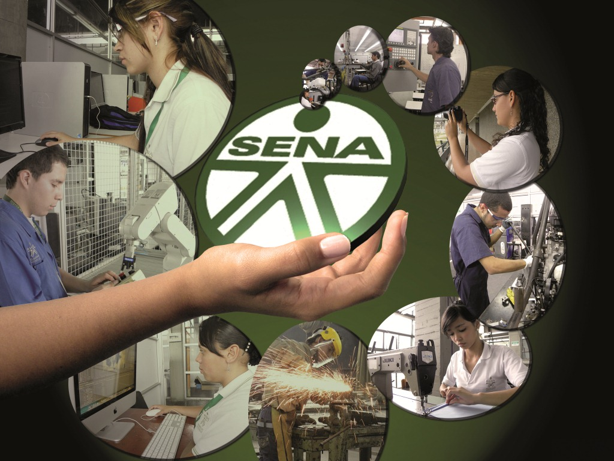

Editorial
Bienvenidos al Periódico Virtual del SENA. En esta edición, exploramos la importancia de la formación técnica y su impacto en el desarrollo profesional de los colombianos...
Equipo de Trabajo
- Deiby Ramirez - Director
- Deiby Ramirez - Editor Principal
- ChatGPT - Diseño
Reseña Histórica del SENA
El Servicio Nacional de Aprendizaje (SENA) fue fundado en 1957 y, desde entonces, ha brindado formación técnica y profesional a millones de colombianos que buscan aprender y encontrar una manera responsable de aportar sus conocimientos a la sociedad.
Aporte del SENA al País
En sus más de 60 años de existencia, el SENA ha jugado un papel crucial en la formación profesional de millones de colombianos. Cada año, alrededor de 7 millones de personas participan en sus programas de formación técnica, tecnológica y complementaria, mejorando sus competencias laborales y abriendo puertas a nuevas oportunidades.
Uno de los mayores aportes del SENA ha sido su capacidad para adaptarse a las necesidades cambiantes del mercado laboral. En los últimos años, la institución ha impulsado fuertemente áreas como la tecnología, la innovación y el emprendimiento. Programas como "SENA Emprende" han apoyado a miles de emprendedores a materializar sus ideas de negocio, contribuyendo así al desarrollo económico del país.
El SENA también ha sido fundamental en la implementación de programas de formación para el trabajo que buscan la inclusión social. A través de sus estrategias, ha logrado llegar a poblaciones vulnerables y ofrecerles oportunidades de formación que mejoren su calidad de vida.
Impacto Reciente:
- Programas de Innovación y Tecnología: En 2023, el SENA lanzó más de 100 programas enfocados en nuevas tecnologías como inteligencia artificial, robótica y desarrollo de software.
- Fomento del Emprendimiento: Más de 50,000 nuevas empresas han sido creadas con el apoyo del SENA en los últimos cinco años.
- Inclusión Social: Programas especiales para jóvenes en situación de vulnerabilidad y personas con discapacidad, garantizando el acceso a formación de calidad.
Estas iniciativas no solo elevan el nivel de competitividad del país, sino que también contribuyen a la construcción de una sociedad más equitativa y con mayores oportunidades para todos.
Cultura Organizacional del SENA
Horizonte o Direccionamiento Institucional
Misión
La misión del SENA es brindar formación profesional integral, gratuita y de alta calidad, orientada al desarrollo y fortalecimiento del talento humano para contribuir al progreso social y económico de Colombia.
Visión
La visión del SENA es ser la entidad líder en formación profesional integral, reconocida nacional e internacionalmente por su contribución a la competitividad y el desarrollo sostenible del país.
Valores
- Compromiso
- Responsabilidad
- Excelencia
- Solidaridad
Principios
- Equidad
- Inclusión
- Innovación
Objetivos
- Formación Integral: Ofrecer programas de formación que integren conocimientos técnicos, valores y habilidades blandas.
- Innovación: Fomentar la investigación y el desarrollo de nuevas tecnologías y metodologías educativas.
- Inclusión: Asegurar el acceso a la formación para todas las personas, independientemente de su situación económica o social.
- Emprendimiento: Promover la cultura emprendedora y apoyar a los emprendedores en el desarrollo de sus ideas de negocio.
- ompetitividad: Contribuir al aumento de la competitividad del país mediante la formación de talento humano calificado.
Identidad Corporativa
Himno
CORO
Estudiantes del SENA adelante
Por Colombia luchad con amor
Con el ánimo noble y radiante
Transformémosla en mundo mejor
I
De la patria el futuro destino,
en las manos del joven está,
el trabajo es seguro camino,
que el progreso a Colombia dará.
II
En la forja del SENA se forman,
hombres libres que anhelan triunfar,
con la ciencia y la técnica unidas,
nuevos rumbos de paz trazarán.
III
Hoy la patria nos grita sentida,
¡estudiantes del SENA triunfad!
solo así lograréis en la vida,
más justicia, mayor libertad.
IV
Avancemos con fuerza guerrera,
¡estudiantes con firme tesón!
que la patria en nosotros espera,
su pacífica revolución.
Bandera y Escudo

Sopa de Letras de la Cultura Institucional del SENA
| L | C | R | Y | I | N | N | O | V | A | C | I | O | N | C | J | G | F | N | P |
| C | S | I | A | Y | L | U | E | M | F | O | R | M | A | C | I | O | N | U | Q |
| Z | Y | L | R | E | S | P | O | N | S | A | B | I | L | I | D | A | D | S | F |
| H | D | E | S | A | R | R | O | L | L | O | X | Y | V | X | C | O | H | U | D |
| O | T | I | P | O | A | C | R | U | A | P | E | D | C | O | M | T | B | U | X |
| N | I | S | L | C | A | V | A | C | A | P | A | C | O | R | I | T | A | D | Y |
| H | V | T | E | Q | U | I | D | A | D | I | A | X | I | O | O | R | P | O | X |
| I | C | O | M | P | R | O | M | I | S | O | B | S | J | D | I | N | U | A | A |
| A | A | A | Y | P | E | N | A | Y | M | E | T | I | C | A | R | T | H | X | H |